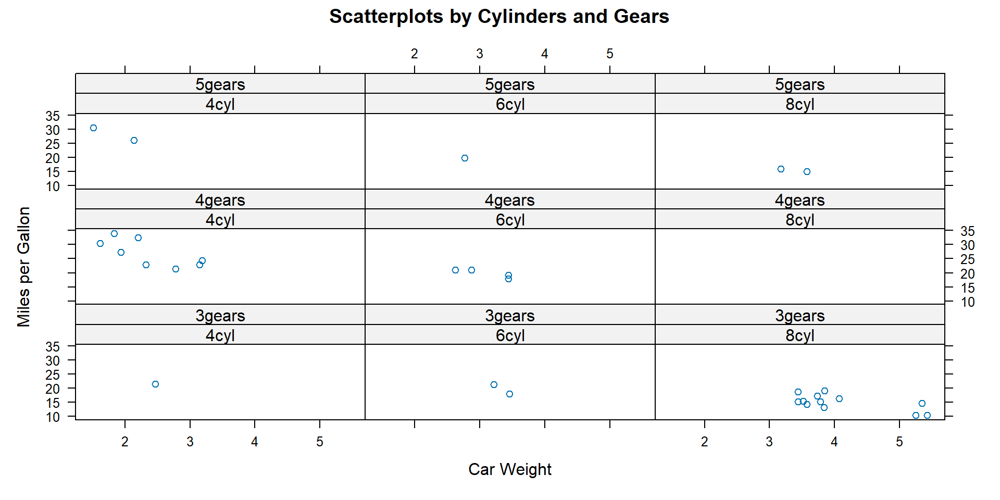
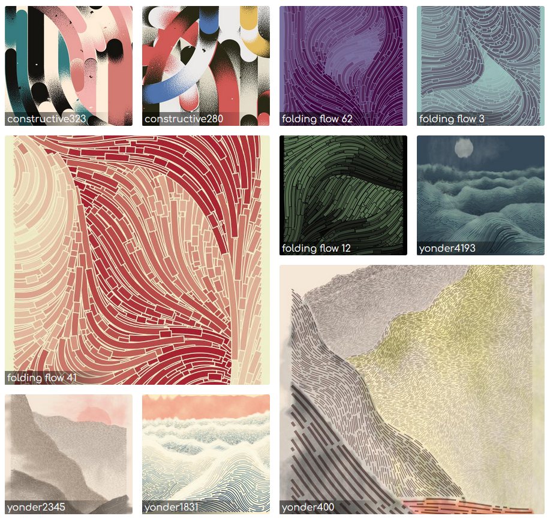
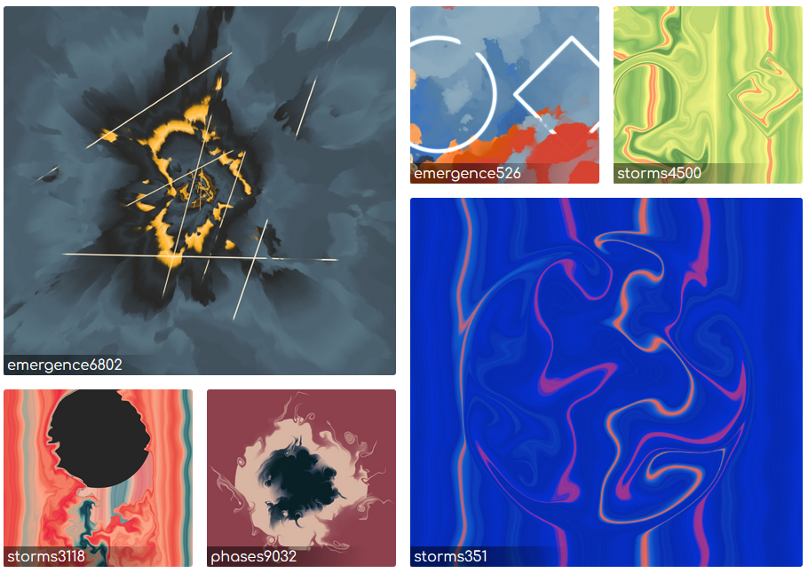
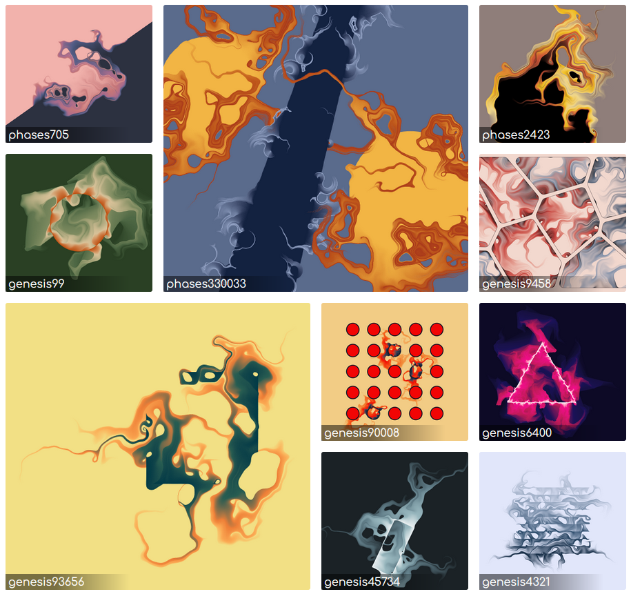

Visualisation de données avec R
Tour d’horizon des fonctionnalités de représentation graphique

Journée annuelle SO-MATE 2023, Limoges

Graphiques avec Excel
✅ Rapide
✅ Facile
Fonctionnalités disponibles :
❌ Graphiques par défault
❌ Types de graphiques
❌ Interactivité
Gestion des données :
❌ Manipulation des données
❌ Statistiques
❌ Données volumineuses
Reproductibilité :
❌ Automatisation du pipeline
❌ Collaboration
❌ Versioning
Graphiques avec des outils dédiés
Des fonctionnalités avancées et des sorties graphiques très élégantes, mais des logiciels payants.
Bon outils si on ne pratique pas R régulièrement, mais limité notamment en matière de reproductibilité.


plot()
Une fonction générique très pratique pour l’exploration, qui s’adapte aux différents types des données.
1 variable quantitative - Nuage de points ordonnés
2 variables quantitatives - Nuage de points
1 variable quanti vs 1 variable quali - Boîte à moustache


Un tableau de données complet - Un seul type de graphique

Autres fonctions graphiques R-base
-
hist(): histogramme de distribution -
stripchart(): diagrammes de dispersion -
dotchart(): diagramme en points de Cleveland -
boxplot(): diagramme en boîte -
qqnorm(): diagramme quantile-quantile théorique normal -
qqplot(): diagramme quantile-quantile empirique -
barplot(): diagramme à barres -
pie(): diagramme en secteurs -
mosaicplot(): diagramme en mosaïque -
spineplot(): diagrammes en épine (entre l’histogramme et le mosaic plot) -
curve(): Représentation d’une expression mathématique -
matplot(): Dispersions de toutes le variables d’un tableau (un graphique) -
pairs(): Matrice de nuage de point pour l’ensemble des variables d’un tableau - etc….
Note
En fonction du type de variable, la fonction plot() renvoie vers les fonctions barplot(), spineplot(), stripchart(), boxplot(), curve(), pairs()…
Histogramme de distribution

Diagrammes de dispersion

Diagrammes en épine

Boîte à moustache

Diagramme en points de Cleveland

Camembert


Gestion de la fenêtre graphique
Trois fonctions permettent de gérer les paramètres de la fenêtre graphique.
I. par() pour définir ou interroger les paramètres de la fenêtre graphique.
Code
par(bg = "royalblue1", # Couleur de fond
col= "white", # couleur du graphique
mfrow = c(2,2), # Fenêtre découper en deux lignes / deux colonnes (4 graphiques)
mar = c(5,5,5,5)) # Gestion des marges pour chaque graphique (B,L,T,R)
plot(x = log(1:10), y = 10:1, main = "plot 1")
plot(x = exp(1:10), y = log(1:10), main = "plot 2")
plot(x = sin(1:10), y = 1:10, main = "plot 3")
plot(x = 1:10, y = exp(1:10), main = "plot 4")
II. layout() propose moins d’arguments mais permet un meilleur ajustement de la disposition des figures.
Avec la matrice ci-dessus, la fenêtre graphique sera paramétrée pour contenir trois graphiques. Le graphique 1 occupera toute la première ligne. le graphique 2 occupera les deux dernières lignes de la première colonne, et le 3e sera situé dans les deux dernières lignes de la dernière colonne.
II. dev.off() ferme le graphique en cours et réinitialise par défault la fenêtre graphique.


lattice (2001)
Le package lattice vise à améliorer les graphiques de base de R en fournissant des valeurs par défaut améliorées et une visualisation simplifiée des relations multivariées.

L’une de ses principales caractéristiques est la prise en charge de la création de graphiques en treillis, qui permettent d’afficher des variables ou des relations entre variables, conditionnées par une ou plusieurs autres variables.

Note
Ce package apporte des fonctionnalités supplémentaires aux fonctions graphiques R-base. Cependant, le rendu graphique reste rudimentaire.
ggplot2 (2007 - 2012)
le package ggplot2 (Wickham 2016) est une véritable révolution en matière de représentation graphique, qui dépasse le périmètre de la communauté R. Ce package :
- Repose sur le concept de La Grammar of Graphics (Wilkinson 1999)
- Produit des graphiques très élégants par défault
- Est adapté au développement d’extensions
- Ouvre la possibilité de construire des représentations graphiques variées et personnalisées.


ggplot2, au delà de R…
La syntaxe de la grammaire des graphiques, implementée dans un premier temps en langage R, a été reprise et adaptée dans plusieurs langages de programmation.
La grammaire des graphiques avec ggplot2 :


La grammaire des graphiques en Python (altair)


La grammaire des graphiques en JavaScript (vegalite)


La grammaire des graphiques en Observable JS (Plot)

Les extensions de ggplot2
De nombreuses extensions de ggplot2 ont été développées et offrent de nouvelles fonctionnalités en matière de mise en forme, de types de représentation graphique, d’animation, d’intéractivité, d’objet pris en compte…

esquisse, l’extension à connaître
esquisse est un package français (Meyer et Perrier 2022). C’est l’une des extensions ggplot2 les plus téléchargées. Il s’agit d’un addin (shiny) pour créer des graphiques ggplot2 de manière interactive, puis récupérer le code R généré automatiquement.

ggplot2, de la customization avancée…


… à l’art graphique numérique
Thomas Lin Pedersen (Rstudio)




Palettes de couleurs
De nombreuses palettes de couleurs sont directement disponibles en R-base :

Au cas où, près de 70 (!) packages proposent des palettes de couleurs
-
paletteer(Hvitfeldt 2021) propose 2587 palettes (compilation) -
cols4all(Tennekes 2023), une application shiny pour les explorer

Références bibliographiques
Hvitfeldt, Emil. 2021. paletteer: Comprehensive Collection of Color Palettes. https://github.com/EmilHvitfeldt/paletteer.
Meyer, Fanny, et Victor Perrier. 2022. esquisse: Explore and Visualize Your Data Interactively. https://CRAN.R-project.org/package=esquisse.
Tennekes, Martijn. 2023. cols4all: Colors for all. https://CRAN.R-project.org/package=cols4all.
Wickham, Hadley. 2010. « A Layered Grammar of Graphics ». Journal of Computational and Graphical Statistics 19 (1): 3‑28. https://doi.org/10.1198/jcgs.2009.07098.
———. 2016. ggplot2: Elegant Graphics for Data Analysis. Springer-Verlag New York. https://ggplot2.tidyverse.org.
Wilkinson, Leland. 1999. The Grammar of Graphics. Springer-Verlag New York, Inc.